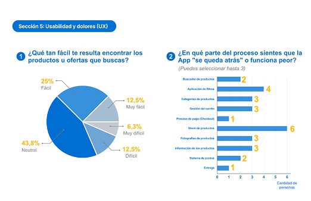
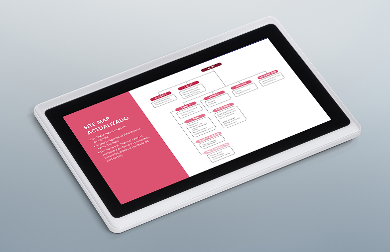
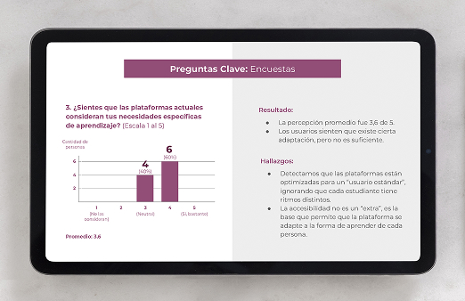

Diseño UX/UI
- Investigación de usuarios
- Arquitectura de la información
- Wireframes y flujos
- Diseño de interfaces
- Prototipos interactivos
Soy Diseñadora Industrial & UX/UI. Integro ambas disciplinas para crear experiencias integrales, uniendo la atención al detalle con el dinamismo de las interfaces interactivas y el foco en el usuario. Gracias a mi trayectoria en proyectos de señalética, desarrollo soluciones que no solo son estéticas, sino estructuradas y funcionales, logrando que lo complejo se sienta natural y fluido.
El Desafío: Basados en la hipótesis de que la plataforma original limitaba la experiencia del usuario, diseñamos una solución EdTech desde cero. Escalamos desde wireframes hasta una interfaz completa, garantizando coherencia técnica y visual en cada interacción.
La Solución: Utilicé Atomic Design para construir un sistema escalable y consistente. El foco estratégico fue optimizar la jerarquía visual, priorizando la visibilidad del botón de contacto (punto crítico detectado en investigación previa) para convertir una navegación fragmentada en un flujo de usuario intuitivo y eficiente.
Resultados & Aprendizaje: Tests de usabilidad en Maze confirmaron un 100% de éxito en las tareas principales. El análisis de mapas de calor reveló fricciones en carruseles y login, que documenté como hoja de ruta para futuras iteraciones, reforzando que el diseño es un proceso evolutivo basado en evidencia.
Habilidades:
Herramientas:

Proyecto grupal enfocado en la optimización UX de la App Lider. Mediante benchmarking, entrevistas y Journey Maps, diagnosticamos puntos críticos en el flujo de compra. Con base en estos hallazgos, propusimos mejoras estratégicas orientadas a simplificar la navegación y elevar la eficiencia del usuario.
Ver detalles
Proyecto académico de Arquitectura de Información (IA). Rediseñamos la navegación jerárquica basándonos en benchmarking, card sorting y tree testing. A través de wireframes funcionales, logramos una estructura validada que maximiza la encontrabilidad y eficiencia del usuario final.
Ver detalles
Proyecto académico grupal para una plataforma educativa accesible. A través de investigación de usuario y User Journey Maps, definimos flujos y desarrollamos wireframes que resolvieron barreras de navegación, optimizando la jerarquía visual para crear una experiencia de aprendizaje inclusiva y escalable.
Ver detalles